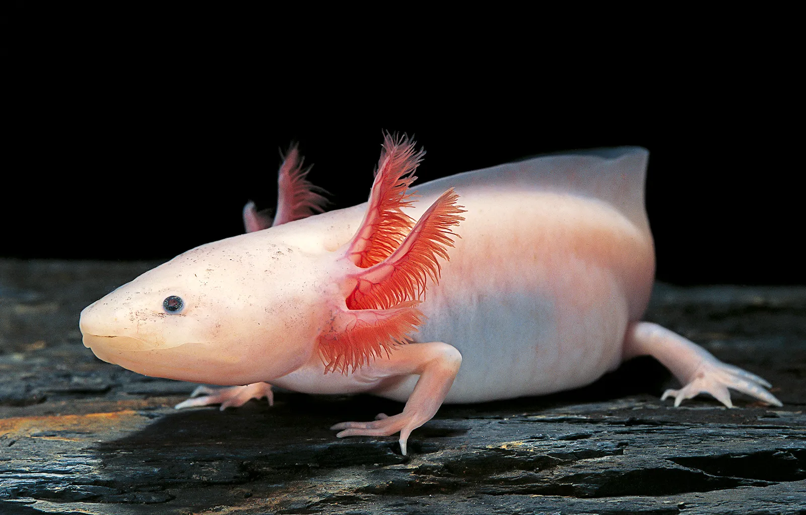

Meet our Friends whose waiting to be adopted
Otto and Bodi
Otto and Bodi are a breed of dogs called border collies.
We found them abandoned in a Car graveyard with no food or water.
When we first found them, we can see the rib bones showing through their skins from how starved they were.
approaching them was quite the easy task as they were very friendly.
If you are willing to adopt one you must also adopt the other they've be friend for so long if we seperate them
each of them will get lonely.
Moon and Whiskers
Moon is a Tuxedo cat.
Feisty yet an energetic little angel.
She was found under a car with an injured leg which seemed to be caused by a bike.
It was a bit of a challenge to catch her at first but there's nothing food can't fix.
we lured her out with cat food and now she's looking for a forever home with humans that'll care for her.
Whiskers is a toyger cat.
He is a very well behaved cat was given to us by a lady who had to move away to a very far place to
which she couldn't take whiskers with her. Relaxed yet a charming Kitty that'll make your day better.

Boggo and Boe

Boggo and Boe are a pair of domestic pigeons. They're were in the city streets which they shouldn't be.
Since they're domesticated they wouldn't be able to survive out in the street unlike normal pigeons.
They are very docile, sweet, and social creatures so they should be housed in groups of at least two.
keeping a single one is only recommended if you're sure you can offer enough time and companionship to keep your pigeon happy.
Winnie
Winnie is a chinchilla. Winnie was gifted as a pet for a young child as a result they didn't give enough care for her and didn't know how
to take care of her, leaving her in a near death situation. chinchillas are quite shy and are more appropriate as pets for adults and older children.
Although once bonded they will be extremely affectionate with you. If you're adopting it is a must to do your research.
Lotte
Lotte is a pink axolotl. He just one day spawned right in front of door....yeah I'm running out of stories to make up so just imgine
I wrote something like a convincing tragic story here.

Basic needs for all the pets
- Food and water
- Place to sleep
- Exercise
- Basic supplies (leash,collar,dishware ect..)
- Grooming items
- Suitable environment
requirment needed for adopting is an absolute must and We take the safety of our pets very seriously.
We will not let you adopt, unless you prove us that you can provide the requirements needed for the pets